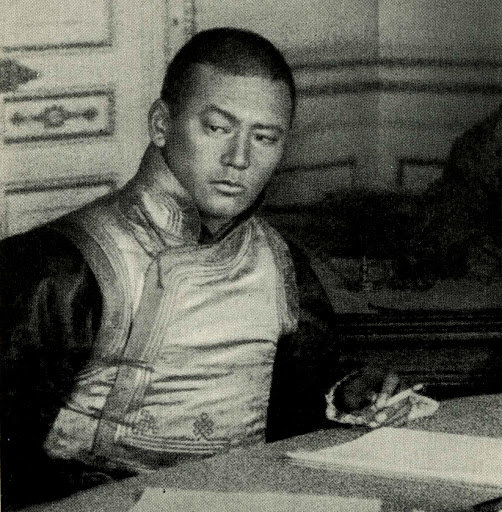

ДАМДИНЫ СҮХБААТАР
1893 оны 2 дугаар сарын 2-нд одоогийн Амгаланбаатар хотноо мэндэлжээ. Эцэг Цагаан дээлт Дамдин, эх Ханджав нар нь Сэцэн хан аймгийн Ёст бэйсийн хошуу, одоогийн Сүхбаатар аймгийн Сүхбаатар сумын уугуул, Хайсан овгийн хүмүүс юм. 1890 онд Их Хүрээнд ирж Маахуур толгойн жалга хавьд нутаглаж байсан бөгөөд тэр нь одоогийн Их Засаг их сургуулийн орчимд ажээ. Дамдиных Дэндэв, Ранжин хэмээх хоёр хүүтэй байсан бөгөөд Их Хүрээнд ирсний дараа хүү Сүх нь мэндэлжээ. Сүхийн бичиг үсгийн анхны багш нь Жамъян, манж хэлний багш нь Гүррагчаа хэмээх хүмүүс байв. Сүх 16 насандаа Их Хүрээний дөрвөн босго буюу Нийслэл Хүрээ-Хиагтын өртөөний Хүй-Мандал-Бургалтайн өртөөнд ээлжлэн улаа нэхэж байгаад 1911 онд 19 насандаа Богд хаант Монгол улсын цэргийн албанд татагдан, пулемёт сумангийн дарга болж, Бавуужавын эсрэг дайнд тодрон гавъяа байгуулж Сүх гэдэг нэрнийхээ ард “баатар” хэмээх нэрийг нэмж зүүжээ. Улмаар сайн суралцаж төгссөн учир удаа дараалан цэргийн отго жинсээр шагнуулжээ.
1918 онд цэргийн албанаас халагдан хэвлэх үйлдвэрт үсэг өрөгчөөр ажиллаж, дараа нь “Хүрээний нууц бүлгэм”-д элсэн орж, “Монголын үнэн” сонинг санаачлан сэтгүүлчээр ажиллаж, 1920 онд Зөвлөлт Орос Улсаас тусламж гуйх төлөөлөгчдийн бүрэлдэхүүнд орж Эрхүү хотод 4 сарын турш амьдарчээ.
1921 оны 2 дугаар сараас Ардын журамт цэрэг элсүүлэх ажлыг удирдан зохион байгуулж, бүгдийг ерөнхийлөн захирах жанжнаар нь томилогдон эх орныхоо эрх чөлөө, тусгаар тогтнолын төлөө тууштай тэмцэж, Ардын хувьсгалыг мандуулан жолоодсон тул 1922 оны 9 дүгээр сард “Зоригт баатар” цолоор шагнуулж, 1922 онд Зөвлөлт Орос Улсын Улаан тугийн одонгоор шагнагджээ.
Д.Сүхбаатар 1923 оны 2 дугаар сарын 22-нд цэл залуу насандаа зуурдаар таалал төгсчээ. 1924 оноос Д.Сүхбаатарын дурсгалд зориулан нам олон нийтийн байгууллага, хөдөлмөрчдийн өргөн цуглааныг хийж эхэлсэн бөгөөд 1930 оны намар Улсын төв театрын өмнөх талбайг түүний нэрээр нэрлэжээ. 1934 оноос Монголын бүх цэрэг армийн улаан буланг Д.Сүхбаатарын нэрэмжит болгож, мөн 1943 онд түүний нэрэмжит офицерын сургуулийг байгуулж, их дээд сургуулийн шилдэг онц сурлагатнуудад Д.Сүхбаатарын нэрэмжит цалин олгодог болжээ.
1945 оны 9 дүгээр сард төрийн хамгийн дээд шагнал Д.Сүхбаатарын одонг бий болгож, 1946 онд уран барималч С.Чоймболын гаргасан загвараар хөшөөг бүтээж 7 дугаар сарын 8-нд албан ёсоор хөшөөний нээлтийг хийжээ. 1947 онд одоогийн Батлан Хамгаалахын Их Сургуулийг Д.Сүхбаатарын нэрэмжит болгож, Ардын хувьсгалын 26 жилийн ойгоор Алтанбулаг дахь түүний ажиллаж амьдарч байсан байшинд музейг нь байгуулжээ. 1948 онд Улсын хэвлэх үйлдвэр, Төв цахилгаан комбинат, Хужиртын халуун рашаан сувилал, 10 жилийн 2 дугаар сургуулийг тус тус түүний нэрэмжит болгож, 1953-1954 онд Засгийн газрын тусгай комисс Сүхбаатарын талбайд барьсан бунханд Д.Сүхбаатар, Х.Чойбалсан нарын шарилыг шилжүүлэн байршуулж тэдний дурсгалыг мөнхжүүлсэн байна. 1963 онд Монголын Ардын армийн 120 дугаар ангийг, 1965 онд Монголын пионерийн байгууллагыг, 1968 онд Нийслэлийн гол гудамжийг Д.Сүхбаатарын нэрэмжит болгож, Монгол оронд “Сүхбаатарын зам”, “Сүхбаатарын туг” гэх мэт түүний нэрээр нэрлэгдсэн хөдөө аж ахуйн нэгдэл 10 гаруй байгуулагджээ.
<
Хөвсгөл нуурын усан онгоц, Мөнххайрхан уулын ноён оргил, УБ төмөр замын нэг өртөө зэрэг нь Сүхбаатар нэртэй юм. Монгол төдийгүй гадаадын зарим орон тухайлбал, Москва хотын 10 жилийн сургууль, Казахстаны Техник мэргэжлийн сургууль, Эрхүү, Барнаул хотын нэг гудамж, Берлин хотын 29 дүгээр сургууль, Гентин хотын Чихрийн комбинат, Болгарын Пиропон дахь Хөдөө аж ахуйн цогцолбор, Оросын армийн нэг танкийн хороо, далайн флотын хөлөг онгоц зэрэг нь Д.Сүхбаатарын нэрэмжит байжээ. Мөн түүний очиж байсан газруудад дурсгалын самбар хөшөөнүүд олноор байгуулжээ. Тэрбээр цэргийн эрдэмд гарамгай, шилдэг удирдагч, чадварлаг уран илтгэгч байсан гэлцдэг. Түүний хэлсэн үг эдүгээ хөшөөний суурин дээр байдгийг хэн бүхэн мэдэх билээ. Тэр үгийг судлаачид Аврам Линкольний “Геттисбергийн үг”-тэй эн зэрэгцэж Мартин Лютер Кингийн “би мөрөөдөж байна” илтгэлтэй зиндаархах хэмжээнд хэлсэн “монгол хүний дархалсан үгэн цамхаг” хэмээн тодорхойлжээ. Эдүгээ Монгол хүн бүрийн сэтгэлд тодхон санагдах түүний хэлсэн үг өнөөг хүртэл бидэнд өвлөгдөн ирсэн бөгөөд цаашид ч монголын үр хойч бүхэнд дээдлэгдсээр байх нь дамжиггүй.
manlaibayrs1@gmail.com
Эх сурвалж: Монгол орны лавлах
